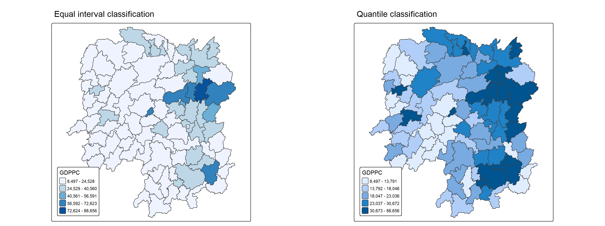
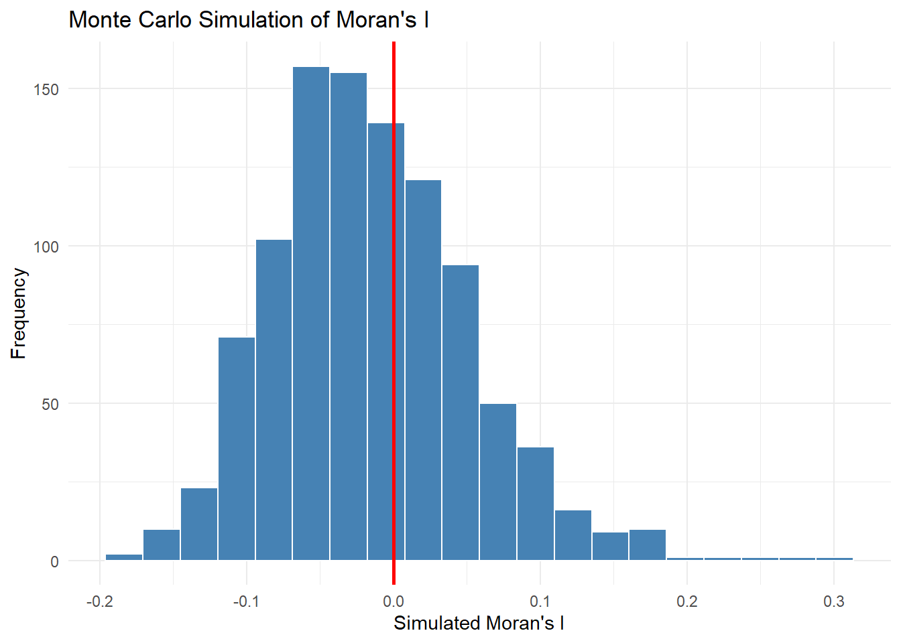
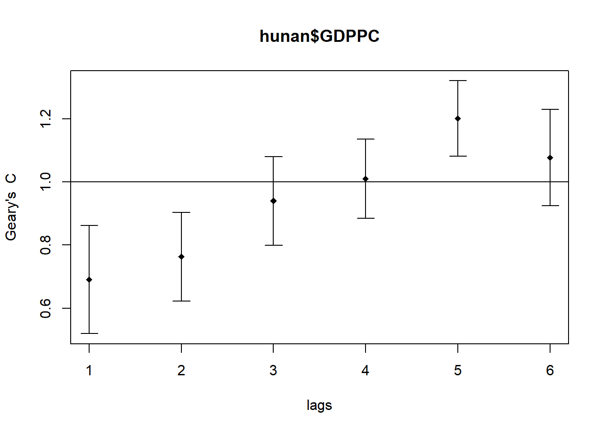

pacman::p_load(sf, spdep, tmap, tidyverse,knitr,kableExtra)Hands-on Exercise 5A
Overview
In spatial policy, one of the main development objective of the local government and planners is to ensure equal distribution of development in the province. Therefore in this study, it is imperative to know how to apply appropriate spatial statistical methods to discover if development are even distributed geographically.
If the answer is No. Then, our next question will be “is there sign of spatial clustering?”.
And, if the answer for this question is yes, then our next question will be “where are these clusters?
We will be computing Global Measures of Spatial Autocorrelation (GMSA), through the use of the spdep package.
Getting Started
Importing of Data
These packages will be used.
sf is use for importing and handling geospatial data in R,
tidyverse is mainly use for wrangling attribute data in R,
spdep will be used to compute spatial weights, global and local spatial autocorrelation statistics
tmap will be used to prepare cartographic quality chropleth map.
We will be using the Hunan data from the In-class exercise 4. The below will be done for importing the data
import the Hunan shapefile and parse it into a sf polygon feature object
Import Hunan_2012.csv file and parse it into a tibble data.frame
# Hunan county boundary layer
hunan <- st_read("data/geospatial/hunan/Hunan.shp")Reading layer `Hunan' from data source
`C:\cjmheidii\ISSS626 - Geospatial\Hands-on_Ex\data\geospatial\hunan\Hunan.shp'
using driver `ESRI Shapefile'
Simple feature collection with 88 features and 7 fields
Geometry type: POLYGON
Dimension: XY
Bounding box: xmin: 108.7831 ymin: 24.6342 xmax: 114.2544 ymax: 30.12812
Geodetic CRS: WGS 84#This is the csv Hunan local development indicators
#This will be in the R dataframe class
hunan_2012<- read_csv("data/aspatial/Hunan_2012.csv")Data joining
Now the relational join is conducted and the required data columns are retained (the unnecessary data columns are removed to not waste memory and space!)
hunan <- left_join(hunan,hunan_2012) %>%
select(1:4, 7, 15)Data Plotting
Finally a basemap and a choropleth map showing the distribution of GDPPC 2012 by using qtm() of tmap package will be plotted out for initial reading.

Note
The steps conducted here are similar to that we had done in In-Class exercise 4. Do take note of the things learnt before like :
Joining of 2 files (Plus types of joins)
Plot sizing when plotting out using tmap packages
The legend and layout (how to manipulate it to ensure data is properly shown and not be covered)
Global Measures of Spatial Autocorrelation
Using the QUEEN Neighbour argument
Before the global spatial autocorrelation statistics can be computed, a spatial weights of the study area has to be conducted (recap from Hands on 4). The spatial weights is used to define the neighbourhood relationships between the geographical units (i.e. county) in the study area.
In the code chunk below, poly2nb() of spdep package is used to compute contiguity weight matrices for the study area.
This function builds a neighbours list based on regions with contiguous boundaries. Recall the use of the QUEEN argument that takes TRUE or FALSE as options. If you do not specify this argument the default is set to TRUE, that is, if you don’t specify queen = FALSE this function will return a list of first order neighbours using the Queen criteria.
For recalling, the table from Hands on 4 is put in to look again at the QUEEN argument in finding neighbours as compared to the QUEEN Counterpart arguments.
#| echo: false
library(knitr)
df <- data.frame(
Situation = c("Share a full edge",
"Share only a single corner point",
"Share nothing",
"Touch at a single point (diagonal)"),
`Rook Neighbour` = c("✅", "❌", "❌", "❌"),
`Queen Neighbour` = c("✅", "✅", "❌", "✅"),
check.names = FALSE
)
kable(df)| Situation | Rook Neighbour | Queen Neighbour |
|---|---|---|
| Share a full edge | ✅ | ✅ |
| Share only a single corner point | ❌ | ✅ |
| Share nothing | ❌ | ❌ |
| Touch at a single point (diagonal) | ❌ | ✅ |
wm_q <- poly2nb(hunan,
queen=TRUE)
summary(wm_q)Neighbour list object:
Number of regions: 88
Number of nonzero links: 448
Percentage nonzero weights: 5.785124
Average number of links: 5.090909
Link number distribution:
1 2 3 4 5 6 7 8 9 11
2 2 12 16 24 14 11 4 2 1
2 least connected regions:
30 65 with 1 link
1 most connected region:
85 with 11 links
Note
This to recall means that within the 88 regions there are 448 non-0 links.
The most connected area unit has 11 neighbours (there is only unit with 11 neighbours which is region 85). There are two area units with only one neighbours and these are regions 30 and 65. Where the average number of links will also be 5.090909 (where mode of number of links is also 5 as seen from the distribution “table”.
Assigning Weights
Next, we need to assign weights to each neighboring polygon. In our case, each neighboring polygon will be assigned equal weight (style=“W”).
This is accomplished by assigning the fraction 1/(#ofneighbors) to each neighboring county then summing the weighted income values.
Caution
TAKE NOTE : it has one drawback in that polygons along the edges of the study area will base their lagged values on fewer polygons thus potentially over- or under-estimating the true nature of the spatial autocorrelation in the data.
We’ll stick with the style=“W” option for simplicity’s sake in this case but note that other more robust options are available, notably style=“B”.
rswm_q <- nb2listw(wm_q,
style="W",
zero.policy = TRUE)
rswm_qCharacteristics of weights list object:
Neighbour list object:
Number of regions: 88
Number of nonzero links: 448
Percentage nonzero weights: 5.785124
Average number of links: 5.090909
Weights style: W
Weights constants summary:
n nn S0 S1 S2
W 88 7744 88 37.86334 365.9147
Note
Take note!
The input of
nb2listw()must be an object of class nb. The syntax of the function has two major arguments, namely style and zero.poly.style can take values “W”, “B”, “C”, “U”, “minmax” and “S”. B is the basic binary coding, W is row standardised (sums over all links to n), C is globally standardised (sums over all links to n), U is equal to C divided by the number of neighbours (sums over all links to unity), while S is the variance-stabilizing coding scheme proposed by Tiefelsdorf et al. 1999, p. 167-168 (sums over all links to n).
If zero policy is set to TRUE, weights vectors of zero length are inserted for regions without neighbour in the neighbours list. These will in turn generate lag values of zero, equivalent to the sum of products of the zero row t(rep(0, length=length(neighbours))) %*% x, for arbitrary numerical vector x of length length(neighbours). The spatially lagged value of x for the zero-neighbour region will then be zero, which may (or may not) be a sensible choice.
Global Measures of Spatial Autocorrelation : Moran’s I
As an introduction, Moran’s I tells you if nearby locations tend to have similar values (positive autocorrelation), dissimilar values (negative autocorrelation), or are randomly arranged (no autocorrelation).
Basically, it says if it correlates a variable with itself across space. Below is a table to summarise the basic gist of details.
Moran’s I Test
| Moran's I | Pattern | Meaning | Example |
|---|---|---|---|
| +ve (I > 0) | Clustered | Similar values attract — spatial clustering | Wealthy neighborhoods clustered together |
| -ve (I < 0) | Dispersed | Dissimilar values repel — spatial dispersion | Alternating rich / poor blocks |
| ≈ 0 | Random | No spatial autocorrelation | No discernible spatial structure |
moran.test(hunan$GDPPC,
listw=rswm_q,
zero.policy = TRUE,
na.action=na.omit)
Moran I test under randomisation
data: hunan$GDPPC
weights: rswm_q
Moran I statistic standard deviate = 4.7351, p-value = 1.095e-06
alternative hypothesis: greater
sample estimates:
Moran I statistic Expectation Variance
0.300749970 -0.011494253 0.004348351
Note
analysis :
With the p value≈ 1.1 × 10⁻⁶ < 0.001, we can reject H0 on the point on Spatial Randomness in Hunan. Through the observed I being 0.3 and the expected I being -0.011 (if its randomised). It can be noted that Hunan is strongly spatially concentrated (0.3-0.5 Observed I value for it to be strong)
Therefore the counties in Hunan with a high GDP per capita tend to be located near other high GDP areas and low GDP areas tend to be near to other low GDP areas as well. Spatially, those with similar wealth amounts are concentrated.
Computing Monte Carlo Moran’s I
To introduce the process :
Monte Carlo empirically builds the null distribution by brute force:
Take the GDP values (in this scenario).
Randomly shuffle them across the map (breaking any spatial structure).
Recompute Moran’s I on the shuffled data.
Repeat n(depending on what nsim is set to).
Compare your actual observed I to the n shuffled values.
This gives you a reference distribution of “what I looks like when there’s no spatial pattern.
Note
Remember the set seed? When we are doing a Monte Carlo it is compulsory to put a set seed to ensure the values that are calculated will always stay the same (or if re-run the Moran’s I value will change again! which will cause trouble when using the values for analysis)
set.seed(1234)
bperm= moran.mc(hunan$GDPPC,
listw=rswm_q,
nsim=999,
zero.policy = TRUE,
na.action=na.omit)
bperm
Monte-Carlo simulation of Moran I
data: hunan$GDPPC
weights: rswm_q
number of simulations + 1: 1000
statistic = 0.30075, observed rank = 1000, p-value = 0.001
alternative hypothesis: greater
Note
Analysis:
With a p value =0.001 <0.05 we can again reject the H0 that Hunan is spatially randomly distributed. (H1 being the fact that the Hunan counties are actually spatially concentrated based on wealth).
Also with the observed rank of 1000 (over 1000), it also proves that Hunan GDP map is more spatially clustered than essentially every random rearrangement
Visualising Moran’s I
It is always a good practice for us the examine the simulated Moran’s I test statistics in greater detail. This can be achieved by plotting the distribution of the statistical values as a histogram by using the code chunk below.
In the code chunk below hist() and abline() of R Graphics are used.
mean(bperm$res[1:999])[1] -0.01504572var(bperm$res[1:999])[1] 0.004371574summary(bperm$res[1:999]) Min. 1st Qu. Median Mean 3rd Qu. Max.
-0.18339 -0.06168 -0.02125 -0.01505 0.02611 0.27593 Now with the brief summary statistics we plot out the Morans I
Base Graph Plot
hist(bperm$res,
freq=TRUE,
breaks=20,
xlab="Simulated Moran's I")
abline(v=0,
col="red") 
Note
Analysis :
The simulated values cluster around the theoretical expectation of −0.011 (red line marks 0), with most mass between −0.15 and +0.15. The observed Moran’s I (0.301) lies entirely outside the simulated range, confirming strong positive spatial autocorrelation and rejecting the null hypothesis of spatial randomness (p = 0.001).
GGplot plot
The alternative is to plot using ggplot
ggplot(data.frame(I = bperm$res), aes(x = I)) +
geom_histogram(bins = 20, fill = "steelblue", color = "white") +
geom_vline(xintercept = 0, color = "red", linewidth = 1) +
labs(
x = "Simulated Moran's I",
y = "Frequency",
title = "Monte Carlo Simulation of Moran's I"
) +
theme_minimal()
Global Measures of Spatial Autocorrelation: Geary’s C
Geary’s C test
Geary C tells you whether nearby locations have similar or dissimilar values. But it’s built differently, and that difference matters.
df <- data.frame(
`Geary's C` = c("C ≈ 0", "0 < C < 1", "C ≈ 1", "1 < C < 2", "C ≈ 2", "C > 2"),
Pattern = c("Strong clustering", "Clustering", "Random", "Dispersion", "Strong dispersion", "Extreme dispersion"),
Meaning = c(
"Neighbours are nearly identical",
"Neighbours are more similar than random",
"No spatial autocorrelation",
"Neighbours are more different than random",
"Perfect checkerboard pattern",
"Highly dissimilar neighbours"
),
Example = c(
"Adjacent areas share almost the same value",
"High values near high values, low near low",
"Values arranged with no spatial structure",
"High values surrounded by low values",
"Strict alternation high–low–high–low",
"Extreme contrast between adjacent areas"
),
check.names = FALSE
)
kable(df, caption = "Interpretation of Geary's C") |>
kable_styling(
bootstrap_options = c("striped", "hover", "condensed"),
full_width = FALSE,
position = "center"
)| Geary's C | Pattern | Meaning | Example |
|---|---|---|---|
| C ≈ 0 | Strong clustering | Neighbours are nearly identical | Adjacent areas share almost the same value |
| 0 < C < 1 | Clustering | Neighbours are more similar than random | High values near high values, low near low |
| C ≈ 1 | Random | No spatial autocorrelation | Values arranged with no spatial structure |
| 1 < C < 2 | Dispersion | Neighbours are more different than random | High values surrounded by low values |
| C ≈ 2 | Strong dispersion | Perfect checkerboard pattern | Strict alternation high–low–high–low |
| C > 2 | Extreme dispersion | Highly dissimilar neighbours | Extreme contrast between adjacent areas |
geary.test(hunan$GDPPC, listw=rswm_q)
Geary C test under randomisation
data: hunan$GDPPC
weights: rswm_q
Geary C statistic standard deviate = 3.6108, p-value = 0.0001526
alternative hypothesis: Expectation greater than statistic
sample estimates:
Geary C statistic Expectation Variance
0.6907223 1.0000000 0.0073364
Note
Analysis:
First, with p =0.0001526<0.001, it is highly significant and we reject H0 where Hunan is plotted with spatial randomness. This is further supposed by the standard deviate =3.6108 where the observed C is 3.6 SDs below expectation, which is again strong evidence against randomness in Hunan. With C=0.6907 <1, it shows that the neighbours are more similar than random and the presence of positive spatial autocorrelation (clustering).
Therefore in conclusion there is statistically significant positive spatial autocorrelation in GDP per capita across Hunan where through the Geary C score, Z score and P it confirms that the evidence against randomness is not by chance. It means basically that counties with similar GDP per capita tend to be spatially adjacent — high-GDP counties cluster together, and low-GDP counties cluster together
Computing Monte Carlo Geary C
Concept is similar to Moran’s test on Monte Carlo, except we are using the Geary C instead.
set.seed(1234)
bperm=geary.mc(hunan$GDPPC,
listw=rswm_q,
nsim=999)
bperm
Monte-Carlo simulation of Geary C
data: hunan$GDPPC
weights: rswm_q
number of simulations + 1: 1000
statistic = 0.69072, observed rank = 1, p-value = 0.001
alternative hypothesis: greater
Note
With a p value =0.001 <0.05 we can again reject the H0 that Hunan is spatially randomly distributed. (H1 being the fact that the Hunan counties are actually spatially concentrated based on wealth).
Also with the observed rank of 1, The observed C here is ranked lowest of all 1000 values here. This show extreme clustering, where the Hunan GDP map is more spatially clustered than essentially every random rearrangement.
(As a note, a rank of 1 here in the Geary Monte Carlo C is also the strongest possible clustering signal the test can produce)
Visualising the Monte Carlo Geary’s C
Similar to the Moran’s test before, the histogram is plotted out
mean(bperm$res[1:999])[1] 1.004402var(bperm$res[1:999])[1] 0.007436493summary(bperm$res[1:999]) Min. 1st Qu. Median Mean 3rd Qu. Max.
0.7142 0.9502 1.0052 1.0044 1.0595 1.2722 hist(bperm$res, freq=TRUE, breaks=20, xlab="Simulated Geary c")
abline(v=1, col="red") 
Note
Analysis :
The Monte Carlo null distribution of Geary’s C for Hunan GDP per capita (999 permutations). Simulated values centre on the theoretical expectation of C = 1.0 (red line), with most mass between 0.85 and 1.2. The observed Geary’s C (0.691) lies entirely outside the simulated range on the low side, confirming strong positive spatial autocorrelation (clustering) and rejecting the null hypothesis of spatial randomness (p = 0.001)
Spatial Correlogram
Spatial correlograms are great to examine patterns of spatial autocorrelation in your data or model residuals.
They show how correlated are pairs of spatial observations when you increase the distance (lag) between them - they are plots of some index of autocorrelation (Moran’s I or Geary’s c) against distance.
Although correlograms are not as fundamental as variograms (a keystone concept of geostatistics), they are very useful as an exploratory and descriptive tool. For this purpose they actually provide richer information than variograms.
Compute Moran’s I correlogram
In the code chunk below, sp.correlogram() of spdep package is used to compute a 6-lag spatial correlogram of GDPPC. The global spatial autocorrelation used in Moran’s I. The plot() of base Graph is then used to plot the output.
MI_corr <- sp.correlogram(wm_q,
hunan$GDPPC,
order=6,
method="I",
style="W")
plot(MI_corr)
By plotting the output might not allow us to provide complete interpretation. This is because not all autocorrelation values are statistically significant. Hence, it is important for us to examine the full analysis report by printing out the analysis results as in the code chunk below.
print(MI_corr)Spatial correlogram for hunan$GDPPC
method: Moran's I
estimate expectation variance standard deviate Pr(I) two sided
1 (88) 0.3007500 -0.0114943 0.0043484 4.7351 2.189e-06 ***
2 (88) 0.2060084 -0.0114943 0.0020962 4.7505 2.029e-06 ***
3 (88) 0.0668273 -0.0114943 0.0014602 2.0496 0.040400 *
4 (88) 0.0299470 -0.0114943 0.0011717 1.2107 0.226015
5 (88) -0.1530471 -0.0114943 0.0012440 -4.0134 5.984e-05 ***
6 (88) -0.1187070 -0.0114943 0.0016791 -2.6164 0.008886 **
---
Signif. codes: 0 '***' 0.001 '**' 0.01 '*' 0.05 '.' 0.1 ' ' 1
Note
Analysis :
With Moran’s I falling monotonically from lag 1 to lag 4, it shows that the clustering decays smoothly with distance.Where from lag 5 onwards the Moran’s I =-0.153 (first negative value), so it shows that there is dispersion.
Therefore it suggests a local spatial dependence on GDP per capita since the spatial dependence has decayed to insignificance within roughly three neighbour orders.
Geary C Correlogram
In the code chunk below, sp.correlogram() of spdep package is used to compute a 6-lag spatial correlogram of GDPPC. The global spatial autocorrelation used in Geary’s C. The plot() of base Graph is then used to plot the output.
GC_corr <- sp.correlogram(wm_q,
hunan$GDPPC,
order=6,
method="C",
style="W")
plot(GC_corr)
print(GC_corr)Spatial correlogram for hunan$GDPPC
method: Geary's C
estimate expectation variance standard deviate Pr(I) two sided
1 (88) 0.6907223 1.0000000 0.0073364 -3.6108 0.0003052 ***
2 (88) 0.7630197 1.0000000 0.0049126 -3.3811 0.0007220 ***
3 (88) 0.9397299 1.0000000 0.0049005 -0.8610 0.3892612
4 (88) 1.0098462 1.0000000 0.0039631 0.1564 0.8757128
5 (88) 1.2008204 1.0000000 0.0035568 3.3673 0.0007592 ***
6 (88) 1.0773386 1.0000000 0.0058042 1.0151 0.3100407
---
Signif. codes: 0 '***' 0.001 '**' 0.01 '*' 0.05 '.' 0.1 ' ' 1